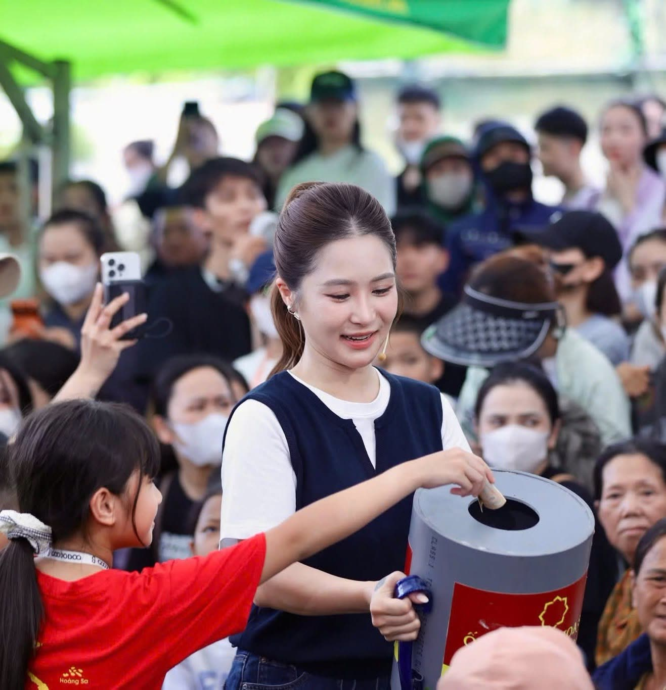
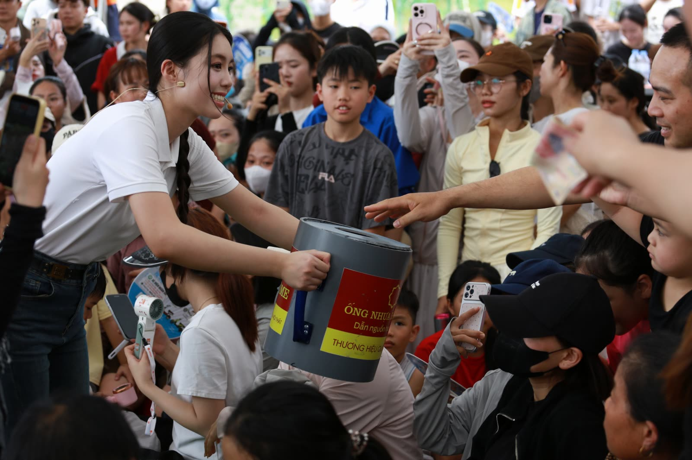
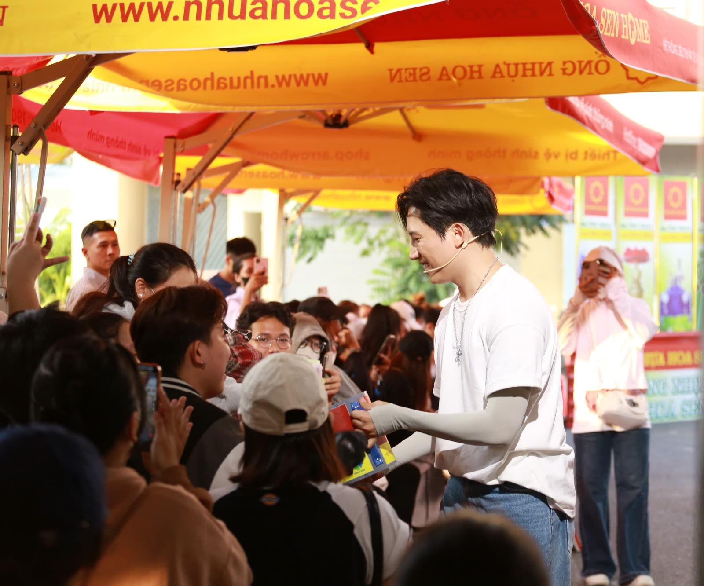
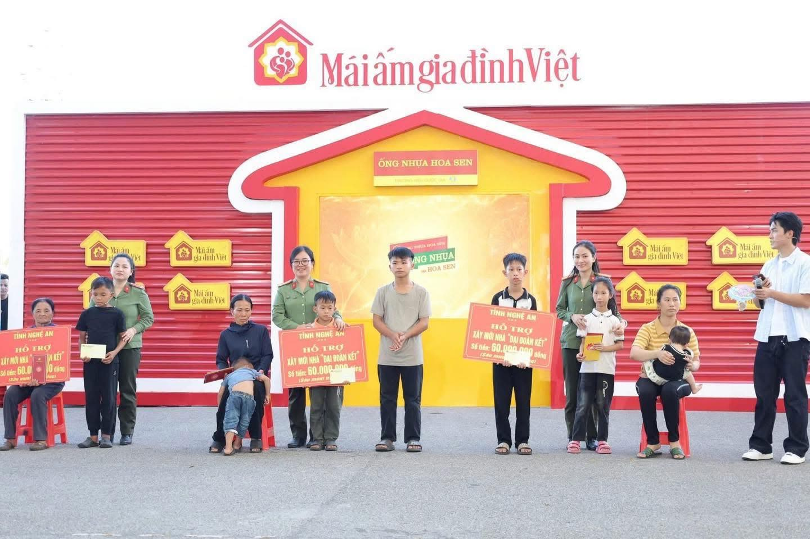
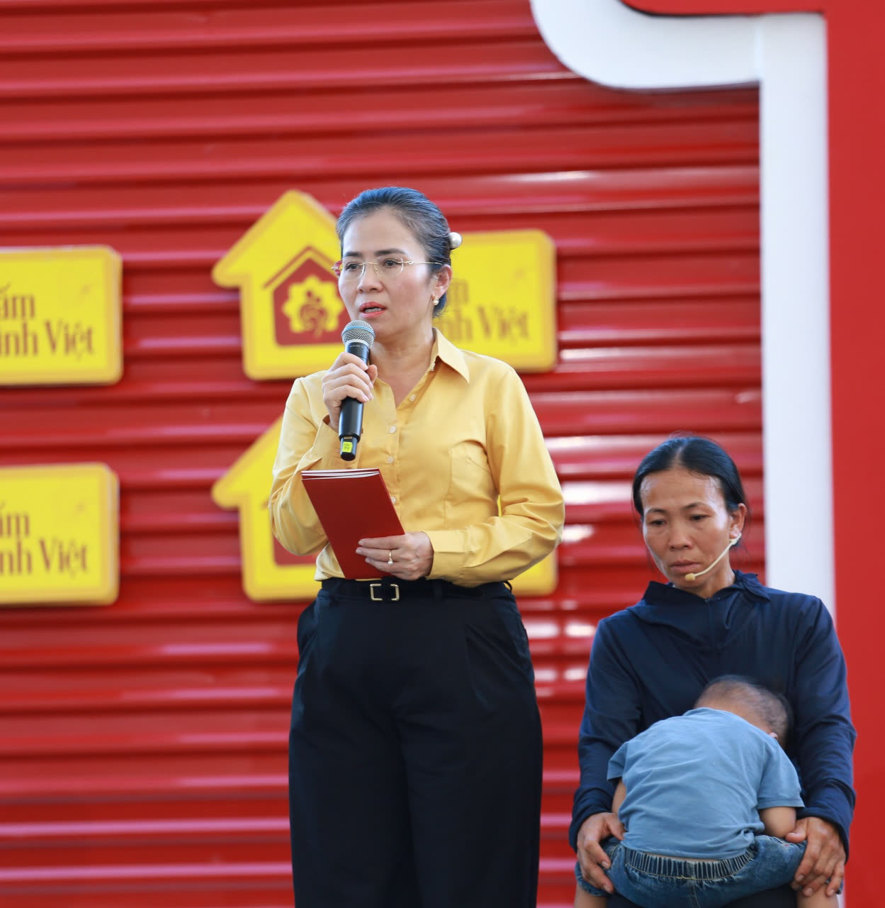

Khép lại ba ngày ghi hình tại Nghệ An, chương trình “Mái ấm gia đình Việt” đã huy động nguồn lực lớn hỗ trợ 18 gia đình có hoàn cảnh đặc biệt khó khăn tại khu vực Bắc Trung Bộ, đồng thời xác lập nhiều kỷ lục về số tiền quyên góp.
Đằng sau những con số ấn tượng là tinh thần đoàn kết, sẻ chia của hàng nghìn người dân xứ Nghệ cùng sự chung tay của chính quyền, doanh nghiệp, nghệ sĩ và các nhà hảo tâm.
Sau ba ngày ghi hình (12/6 – 14/6) tại Quảng trường Hồ Chí Minh, chương trình đã trao khoản hỗ trợ này đến 18 gia đình có hoàn cảnh đặc biệt khó khăn. Trong đó, 600 triệu đồng là tiền thưởng từ nhà tài trợ Hệ thống Siêu thị vật liệu xây dựng & nội thất Hoa Sen Home và Ống nhựa Hoa Sen; hơn 5,6 tỷ đồng còn lại được các nghệ sĩ, đối tác, mạnh thường quân và đông đảo khán giả trực tiếp quyên góp tại trường quay.
Đây là đợt ghi hình có tổng số tiền quyên góp cao nhất kể từ khi chương trình lên sóng. Đáng chú ý, “Thùng tiền yêu thương” ghi nhận hơn 2,5 tỷ đồng từ sự chung tay của khán giả — mức đóng góp cao nhất trong lịch sử chương trình. Riêng tập ghi hình có sự tham gia của MC Dương Hồng Phúc, người mẫu Lê Thúy và ca sĩ Nguyễn Trần Trung Quân đã quyên góp hơn 1,1 tỷ đồng, lập kỷ lục về số tiền ủng hộ trong một tập phát sóng.
yêu thương
Nhữngbàn tay nhỏgóp thànhmộtmái nhà lớn



Theo Ban Tổ chức, những con số kỷ lục không chỉ phản ánh sức lan tỏa của chương trình mà còn cho thấy tinh thần tương thân tương ái của cộng đồng. Trong suốt ba ngày diễn ra sự kiện, hàng nghìn người dân Nghệ An đã có mặt tại Quảng trường Hồ Chí Minh để theo dõi, quyên góp và tiếp thêm động lực cho các gia đình tham gia chương trình.
Sự đồng hành ấy xuất phát từ những câu chuyện đầy xúc động của 18 gia đình. Mỗi nhân vật là một hoàn cảnh đặc biệt: có em nhỏ mồ côi, có gia đình kiệt quệ vì bệnh tật, có những đứa trẻ sớm gánh vác trách nhiệm vượt quá tuổi thơ. Đặc biệt, câu chuyện của em L.T.V. (11 tuổi, xã Thiên Nhẫn) sống cùng người cha trong trạng thái thực vật đã khiến nhiều người xúc động. Điều em mong mỏi nhất không phải cho bản thân, mà là có điều kiện chữa bệnh để cha sớm tỉnh lại.

Bên cạnh nguồn kinh phí từ chương trình, Nghệ An cũng dành nhiều nguồn lực hỗ trợ các gia đình. Từ Quỹ Vì người nghèo, tỉnh hỗ trợ xây mới 5 căn nhà, sửa chữa 2 căn nhà với tổng kinh phí 396 triệu đồng. Ca sĩ Hương Tràm trao tặng 1.000 phao cứu sinh trị giá 200 triệu đồng cho người dân vùng thường xuyên chịu ảnh hưởng bởi thiên tai, mưa lũ.

Phát biểu tại chương trình, đồng chí Võ Thị Minh Sinh — Phó Bí thư Tỉnh ủy, Chủ tịch Ủy ban Mặt trận Tổ quốc Việt Nam tỉnh Nghệ An — đánh giá cao ý nghĩa nhân văn của “Mái ấm gia đình Việt” trong việc lan tỏa tinh thần đoàn kết, tương thân tương ái và chăm lo cho trẻ em, các gia đình có hoàn cảnh khó khăn; đồng thời mong các gia đình tiếp tục nỗ lực vươn lên, ổn định cuộc sống.

“Khi cộng đồng cùng sẻ chia,mỗi tấm lòng đều có thể góp phầntạo nên một “mái ấm” lớn hơncho những hoàn cảnh khó khăn.”
Những con số kỷ lục rồi sẽ được ghi vào thống kê của chương trình. Nhưng điều còn ở lại lâu hơn là khoảnh khắc hàng nghìn người cùng tin rằng một mái ấm có thể được dựng lên từ rất nhiều bàn tay nhỏ.